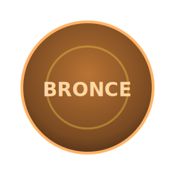

Tu progreso

Puntos: 0
Nivel: BRONCE
Racha (semanas): 0
*Sin servidor todavía: la información se guarda en tu navegador (localStorage).
Tabla de posiciones
*Ejemplo de datos locales. En producción, puedes alimentar este ranking desde una hoja (CSV/JSON) o formulario moderado.
Centro de Retos
Evidencia sugerida (temporal): enlace público a tu publicación o captura (URL).
Añádela en el campo del reto y pulsa “Marcar como realizado”.
Añádela en el campo del reto y pulsa “Marcar como realizado”.
Galería comunitaria
*Muestra las últimas evidencias compartidas por participantes (URLs validadas localmente).